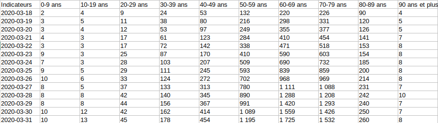
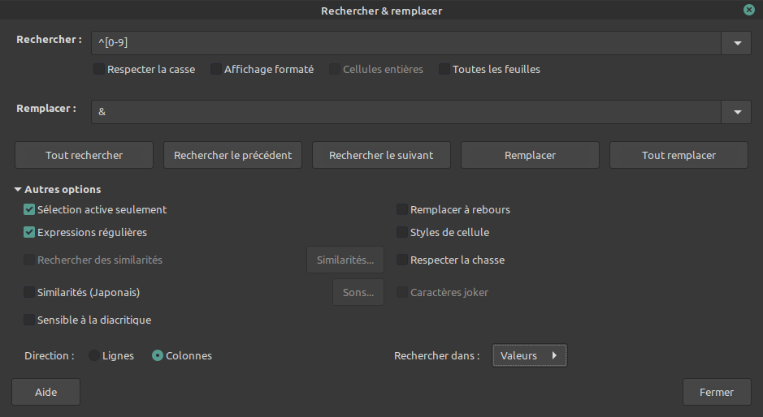
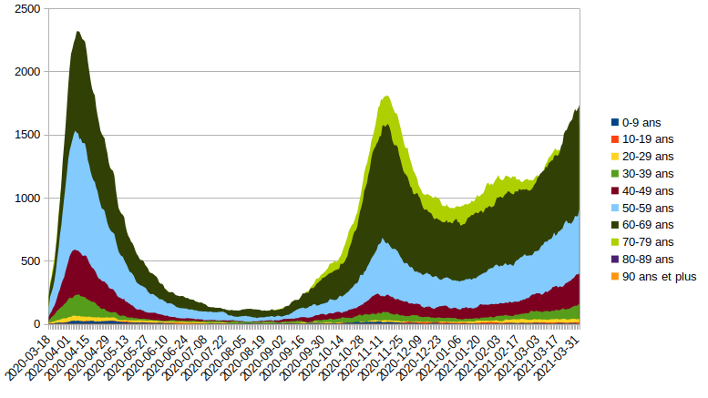
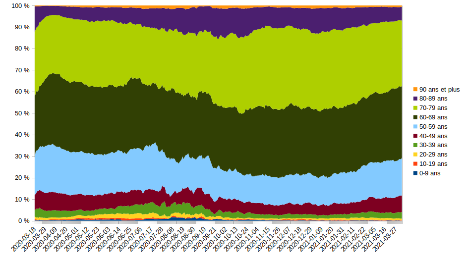

Nouveau confinement : l'excuse des jeunes
Ça y est, le nouveau confinement est lancé.
Depuis le début de cette grande aventure, les « sachant » nous proposent chaque jour de nouveaux indicateurs pour relancer la panique.
Les gens commencent à avoir compris que quand on devient vieux, au bout d’un moment on décède. Aussi, le fait de suivre les décès de nos anciens en direct à la télé commence à ne plus faire trop peur.
En plus, comme on est en train de les vacciner, ça la foutrait mal de constater qu’on ne voit pas de différence de décès entre avant la campagne de vaccination et après. La nouvelle stratégie est donc de faire croire que l’hécatombe arrive aussi chez les plus jeunes. Enfin, quand on dit jeune, on parle des moins de 70 ans, il ne s’agirait pas de manquer de galanterie envers notre première dame.
En plus, une fois qu’on aura vacciné tous les vieux, il faudra bien trouver quelqu’un d’autre à qui faire des piqûres, il ne s’agirait pas de voir s’effondrer la bourse.
Nous allons donc ici vérifier si les données mises en ligne par Santé publique France, nous permettent d’avoir les mêmes conclusions que nos sachants
. D’habitude, je n’utilise pas ces données, car je considère qu’elles grossissent la situation actuelle, je n’utilise que les statistiques de mortalité toutes causes qui sont infalsifiables. Mais puisque c’est là-dessus que s’appuie la politique sanitaire, autant aller les voir.
Le seul matériel nécessaire pour les réaliser est votre logiciel de tableur favori (LibreOffice Calc, par exemple).
1. Accéder aux chiffres utilisés par le gouvernement
- Se rendre sur geodes.santepubliquefrance.fr
- Cliquer sur Indicateurs : cartes, données et graphiques
- Dans la colonne de gauche, cliquer sur
C →COVID-19 →Données hospitalières - Choisir
Nombre de personnes actuellement en soins critiques (SR/SI/SC) par âge puis, dans un premier temps, sélectionnertous âges - Au-dessus de la carte qui s'affiche, cliquer sur
Tableau pour récupérer tous les données sources (les chiffres) qui sont représentés visuellement sur la carte. - Cliquer sur l'onglet
Synthèse pour apprendre comment est créé cet indicateur. - Lire le petit
4) pour constater comment cet indicateur a évolué au cours de l'épidémie, afin d'augmenter le nombre de cas comptés par cet indicateur, et ainsi flouer l'analyser, dramatiser la situation en faisant croire que de nouveaux variants seraient pour les jeunes plus dangereux que les variants précédents.
2. Récupérer les données
Nous allons maintenant devoir faire le travail un peu fastidieux qui consiste à récupérer plusieurs fichiers de données et les fusionner afin de pouvoir créer des graphiques réellement utiles, quoiqu'ayant l'inconvénient d'être beaucoup moins effrayants que ceux affichés d'ordinaire.
Nous allons récupérer les données d'évolutions du nombre de personnes en soin critiques, classées par âge, afin de voir comment la répartition par âge des patients admises en soins critique évolue dans le temps et de répondre à la question :
Les nouveaux variants sont-ils plus dangereux pour les jeunes que les précédents ?
Commencez par créer un dossier dédié sur votre système de fichier. Vous pouvez, par exemple, appeler ce dossier
- Dans le panneau de gauche, sous
Nombre de personnes actuellement en soins critiques (SR/SI/SC) par âge , sélectionner0-9 ans - Dans l'onglet
Synthèse , récupérer le fichier de tableur pour cette tranche d'âge en cliquant sur puis
puis Exporter . - Dans le panneau qui s'ouvre à gauche, choisir votre format préféré, suivant que vous soyez équipé de Microsoft Excel (xslx) ou LibreOffice/OpenOffice (ods).
- Cliquer sur
Exécuter - Choisir
Enregistrer le fichier - Donnez-lui un nom reconnaissable, comme
0-9-ans.ods - Répétez ce processus pour chaque tranche d'âge
3. Regrouper les données
Ici, il va s'agir de regrouper toutes ces données disparates dans un seul grand tableau, afin de pouvoir générer un graphique d'évolution des répartitions.
- Copiez/coller le fichier
0-9-ans.ods , et appelez le nouveau fichier ainsi créécompilation.ods , par exemple. - Ouvrez ce fichier et rendez-vous dans l'onglet
Graphiques , dans lequel se trouvent les données historiques. - Renommez
Valeur
en0-9 ans
afin que ce soit plus clair. - Ouvrez le fichier
10-19-ans.ods et rendez-vous dans l'ongletGraphiques . - Cliquez sur la colonne B pour sélectionner les données pour cette tranches d'âge.
- Copiez ces donnez (
Ctrl +C ) - Fermez le fichier de cettre tranche d'âge
- Retournez dans le fichier compilation.ods et collez (
Ctrl +V ) les données du presse papier dans la première colonne libre. - Renommez
Valeur
pour lui assigner la tranche d'âge appropriée. - Répétez ce processus pour chque tranche d'âge, jusqu'à ce que vous aillez toutes les données dans un seul fichier.
À ce stade, vous données devraient ressembler à ça :

L'ennui ici est que les chiffres ne sont pas au format nombre mais au format texte&8239;! En effet, lorsque vous cliquez sur une cellule, vous pouvez constater qu'un apostrophe précède le nombre. Ceci va nous empêcher de générer un graphique.
Corrigeons ça :
- Sélectionnez la plage des données incriminées par un cliquer-glisser.
- Allez dans
Édition →Rechercher et remplacer… - Paramétrez de la sorte afin d'effacer tout ce qui n'est pas un nombre :
 - Cliquez sur
Tout remplacer
Si l'opération a fonctionné, chaque nombre devrait maintenant être alignés à droite dans sa cellule.
Il se peut que vos nombres apparaissent avec une virgule. Comme il n'y aurait pas ici de sens à compter des moitiés ou des quarts d'être humain, nous allons corriger ça. Sélectionnez tout via
Un peu de rangement maintenant !
Supprimons les lignes qui ne nous intéressent pas :
- en haut : les 3 premières lignes
- en bas : les 2 tableau supplémentaires intitulés
les 10 premiers
etles 10 derniers
4. Générer les graphiques
Le plus gros du travail est fait.
Il ne reste plus qu'à générer les graphiques.
4.1. Évolution absolue
- Sélectionnez tout via
Édition →Tout sélectionner (ouCtrl +A ) - Créez le graphique correspondant au cellules ainsi sélectionnées via
Insertion →Diagramme… - Dans
Type de diagramme , choisirZone puisNormal (le premier de la liste). - Cliquer sur
Terminer
Si tout s'est bien déroulé, vous devriez obtenir un graphique de ce type :

Ce graphique nous permet de voir l'évolution dans le temps du nombre cas par tranche d'âge, mais le graphique ainsi généré ne permet pas de distinguer très bien si oui ou non les jeunes sont plus affectés récemment.
On va donc choisir un autre type de graphique.
4.2. Évolution des répartitions : les jeunes sont-ils plus affectés maintenant qu'auparavant ?
- Sélectionnez tout via
Édition →Tout sélectionner (ouCtrl +A ) - Créez le graphique correspondant au cellules ainsi sélectionnées via
Insertion →Diagramme… - Dans
Type de diagramme , choisirZone puisPourcentage empilé (le dernier de la liste). - Cliquer sur
Terminer
Si tout s'est bien déroulé, vous devriez obtenir un graphique de ce type :

On peine à voir sur ce graphique une mortalité des jeunes qui deviendrait plus importante au fil du temps.
Fin du module